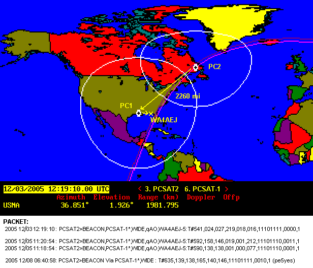
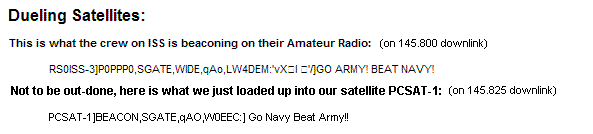
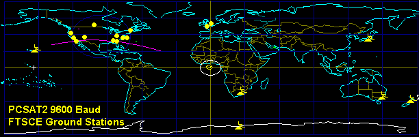
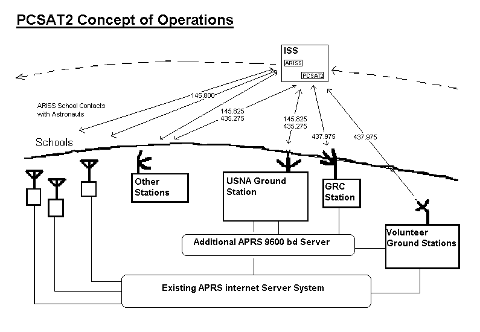
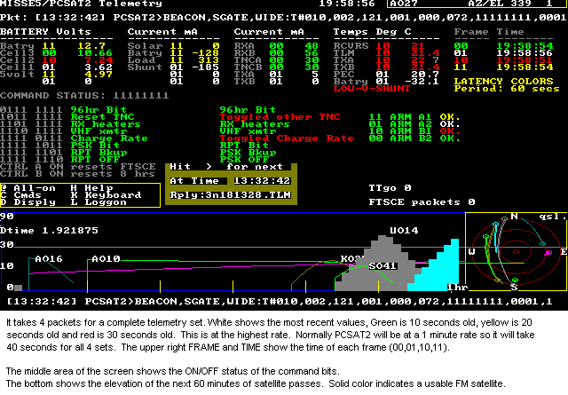

PCSAT2 Operations
PCSAT2 Operations

US Naval Academy Satellite Lab
Bob Bruninga, WB4APR
Midshipmen (2003) Design: Otero, Silver, Jones, Kolwicz, Evans, and Henry
Midshipmen (2005) Operations: Paquette and Robeson
PCSAT2 Operations
US Naval Academy Satellite Lab
Bob Bruninga, WB4APR
Midshipmen (2003) Design: Otero, Silver, Jones, Kolwicz, Evans, and Henry
Midshipmen (2005) Operations: Paquette and Robeson
PCSAT2 HAS RETURNED TO EARTH: PCSAT2 was recovered (see schedule) from the outside of the ISS by astronauts on the 3rd EVA of mission STS-115 and it has now been returned safely to Earth. This is the first Amateur Radio Satellite that has ever returned intact and operational. We look forward to opening it up and seeing what a year in space has done to it.
Final Month's Operations: During August 2006, until end of mission on 1 Sept, PCSAT2 command stations operated the FM Voice UHF DOWNLINK when available. They listened for packets on the ISS 145.99 VHF uplink and 145.825 APRS for uplink packets and acknowledged by voice any such packets or other activity.
JOINT OPERATIONS: PCSAT2 was switched back to UHF for both Packet and PSK-31/CW transponder on 28 March after 2 weeks joint operations on VHF with PCSAT-1 which awoke from hybernation on on 8 March (just like earlier during the 1 Dec period below. Operators were welcome to make 1 and 2 hop contacts via either or both birds using the WIDE2-2 path. The longest dual dual hop packet observed is shown below:

Dec 2005: PCSAT2 awoke on 1 Dec from its 23 Nov low-power shut-down state when ISS changed to XPOP (Xaxis Perpendicular to Orbit Plane) attitude that oriented PCSAT2 towards the Sun again. Shut down had occurred at 11.4v out of its nominal 16v system during this worst Sun angle since launch. See plots of the voltage plunge and last telemetry. on 2 Dec, PCSAT2 was changed to a VHF downlink to operate as a constellation with PCSAT-1.
DUAL-HOP CONSTELLATION EXPERIMENT: On 2 Dec 2005 (and again on 10 March 2006), PCSAT-1 was available for 2 weeks of full Sun and for joint operations on 145.825 until 17 Dec when PCSAT-1 went back to hybernation. See details. The view below shows the path of a PC2 telemetry packet through PCSAT-1 and then down to a SATgate in Florida.
 and the later 12/05 pass
SPECIAL EVENT 2 Dec. Annual Army/Navy game Football Run:
PCSAT2 participated in this annual event by supporting position reporting and
tracking of the special
Army/Navy game ball Run from Annapolis to Phily.
We even had a little pre-game banter with the crew on ISS.
See Article, and
Hear the audio.
Too bad he is supporting the losing team...
Then on 2 Dec, they began doing this:

Another PCSAT2 Internet Project Site: See VK4TEC's page
PCSAT2 Mailbox Experiment: During the hurricane disaster, the emergency comms capabilities of PCSAT2 were tested. The PCSAT2 BBS was enabled with the callsign "MAIL". The digipeater was also available for routine digipeating mobile position data, messages and Email. See the the PC2 Emergency Comms Plan. For voice satellite operations also see the Voice satellite Ops Plan.
SPACECRAFT HEALTH:We experineced SEU's that reset PC2 during a big solar storm on 24 Aug and again on 7 and 17 Sept. We concluded experiments on the PSK-31 transponder with great successes, but have secured it since the performance appears to have degraded over the first month of operation. Otherwise Packet operations and science data downlink on side A are routine. Side B still seems to reset every few days since those early solar storms and is currently not used.
PSK-31 Transponder was enabled for the first 4 weeks. Initially, uplink signals as low as 4 watts on 10m resulted in excellent downlink signals. But degradation over the last 2 week period required 100W or more to be heard. Due to weak signals the transponder has been turned off. See PC2PSK Transponder control method and RX current since launch and some operating notes for the PSK-31 transponder.

SCHEDULING CONSTRAINTS: PCSAT2 operations are not only constrained by the limited passes over the primary ground station shown above, but also by two other influences; ARISS School contacts as noted above, and Solar beta angle (the angle of the Sun to the orbit plane). The beta angle is important beacuse PCSAT2 is vulnerable to the attitude of the ISS which itself is changed to maximize station solar power dependent on beta angle. The ISS flys at 2 or more quite different attitudes depending on whether beta is small or large, and the regime of these attitudes changes every 2 weeks or so. During YVV attitude (Yaxis pointed along Velocity Vector), we are cooler (5C) but get higher peak Solar currents but for shorter duration, hence lower battery charge (14v). During XPOP attitude (Xaxis Perpendicular to Orbit Plane), we are warmer (30C) with half the solar currents but for longer duration leading to full charge (16v). See a graphic demonstration of this constantly changing beta. There is ample current to keep the Packet digipeater on at all times with 145.825 uplink and 435.275 downlink except for extreme beta angles when PCSAT2 will shut down due to low voltage.
VOLUNTEER GROUND STATIONS: Since PCSAT2 has no onboard computer for whole-orbit telemetry capture we are dependent on volunteer ham radio ground stations (see typical photo - AA6RR) and (EA8BQD in the Canaries) for telemetry feeds to the APRS Internet system for live distribution. There are two general classes of telemetry capture stations.
SETTING UP A SATGATE: You can use any APRS program to feed satellite data to the APRS-Internet system (APRS-IS) in the normal manner like any IGate. But if you dont want to mess with all the APRS system, you can build a simple SatGate using only the ALOGGER program. See building an ALOGGER Satgate. See the status of other SATgates. Click to ( download) Alogger
SOLAR CELL DATA: A science mission on this satellite is the long term effects on solar cells. The I/V curves for the solarcells are transmitted in a beacon every 3 minutes and 20 seconds at 9600 baud data as 54 lines in 11 bursts of 5 lines each over 22 seconds. See the Data Capture Challenge Details.
PCSAT2: See a complete description of PCSAT2. This is just one of many Naval Academy compatible spacecraft and several other compatible satellite projects operating in the Amateur Satellite Service. The following map shows the stations that have volunteered to support the special telemetry downlinks from PCSAT2:

PCSAT2 CAPABILITIES: PCSAT2 is attached to the ISS and brings to ARISS new capabilities such as the PSK-31 transponder (see OPS plan),(now inop), a digipeater and an FM voice transponder. These operations must be in cooperation with the ARISS communications suite to minimize any mutual interference and to coordinate activities. All users are welcome who operate in accordance with the PCSAT2 User Service Agreement. Here are the capabilities of the PCSAT2 and ARISS payloads:
PCSAT SYSTEM A:
PCSAT SYSTEM B: (side B seems to reset to defaults every few days and is therefore not currently used)
ARISS RADIO SYSTEM (already on ISS and operational see the live ARISS packet page):

PCSAT2 ORIGINAL PROPOSED OPERATIONS PLAN: Unfortunately, the PCSAT2 design freeze was Dec 2002 for a July 2003 Launch. At that time, there was no cross-band capability on ARISS and so PCSAT2 had to be designed with a UHF downlink and VHF uplink to avoid any interference to monoband 2 meter ARISS school contacts. The Kenwood D700 was not to arrive until 2004. Unfortunately, due to the 2 year shuttle delays, the Kenwood with its crossband capabilities arrived before PCSAT2. But because PCSAT2 was designed to be compatible with monoband ARISS operations, we cannot fully use the intended crossband ARISS modes until after the one year PCSAT2 mission. So during this overlap year, the following combination was proposed as the best overall compromise with continuation of the status-quo and minimizing interference:
. . . . ARISS Packet System on 145.800 with uplink on 145.990
. . . . ARISS School contacts on 145.800 with unpublished uplink
. . . . PCSAT2 telemetry and 9600 bd solar cell telemetry on 435.275
. . . . PCSAT2 secondary ISS Digipeater on 145.825 simplex (only if ARISS is off)
. . . . PCSAT2 PSK31 29.4 MHz ==> 435.275 transponder (inop).
. . . . PCSAT2 2m command uplink has manageable QRM from ARISS downlink packets.
The salient principles and advantages of this ONE-YEAR interim plan are as follows:
For best performance it might be nice to get a dedicated VHF uplink from the IARU for the FM repeater voice uplink for the duration of this joint venture (PCSAT2 will be returned to Earth one year later). This way both the ARISS and PCSAT2 packet systems can both operate simultaneously. Without this additional FM channel for voice uplink, the Erricsson will have to be secured and the 145.99 freqeuncy used for the voice uplink. For reference, currently 145.85 is used for AO-27 FM voice and 145.92 is used for SO-51 Voice.
IN-BAND DESENSE: Three volunteers OE1DMB, ZL3RX and N6IZW tested 4 radios including a D700 last week and they have verified that even with widest in-satellite-band separation on 2 meters (145.800 and 145.990) and 100 foot antenna separation, that desense (blocking) occurs at any power level above about 30 mw. Its slightly better up to 100 to 500 mW or so at the 144 MHz uplink frequency. But 5W and 10W will always block any other 2m receiver on ISS... For UHF and the same 100' separation, operation at the 2 Watt level is possible with in-band splits over 1 MHz or so. See their Data: OE1DMB, ZL3RX, N6IZW.
PCSAT2 TELEMETRY: PCSAT2 can generate routine housekeeping telemetry data on any of its downlinks, but only one at a time. Normally this will be at 9600 baud on the 435.275 along with the solar cell data in a beacon once every 3 minutes. House keeping telemetry is normally transmitted once evry 10 sec, so it takes only 40 seconds for a complete set. During low power operations, this might extend to 1 minute frames and 4 minute totals.
Routine Telemetry: Currently there are three live APRS interenet connected satellite downlink web pages provided by Steve Dimse K4HG:
When decoded, (See Telemetry Equations and format) , here is a screen snapshot of the typical telemetry data:

9600 Baud Telemetry Data: The 9600 baud data uses a modified version of the globally connected APRS internet system, since the data is not of immediate interest to the existing APRS network servers. Phil Pacier AD6NH helped set up this server written by Pete, AE5PL for this purpose. Volunteer groundstations around the world use their IGate software to logon to this site and feed live telemetry. This system is compatible with all APRS normal routing methods. The PCSAT2 Solar Cell data is in an experimental APRS data format (See Solar Cell Telemetry Data). Principal sites use Bill Diaz's ALOGGER software (see above).
EXAMPLE NETWORK DIAGRAM:

9600 Baud Ground Stations can be simple or complex. A simple 19" whip over a ground plane acts as a 3/4 wave omni antenna and will give almost 8 dBi gain above 30 degrees which should give a good link margin if short coax is used. This station will only get data 30% of the time, but with enough of these statins, this will be excellent data, since it will be reliable. A full tracking station will get maybe 3 times as much data, but with more wear and tear on his station.
FIXED OR AUTOMATED STATIONS AND ANTENNAS: Since the 9600 baud data is on UHF doppler tuning is required and because of the 9 dB worse path loss for UHF compared to VHF, typically a BEAM antenna is needed for horizon-to-horizon coverage. However, remember that all of you are feeding every packet you hear into the PCSAT2 server and all it takes is one of you to hear each packet and we all then get a copy.
For this reason, if there are enough ground stations, then not only are BEAM antennas possibly not required but also doppler tuning may not be too much of an issue. THis is because for the center of an overhead pass, the signal has zero Doppler and the satellite is about 9 dB closer to you than it was at the horizon. The down side is that PCSAT2 only provides this geometry twice a day per station and only for 2 minutes or less. But a simple whip antenna could be perfect. In fact a 19" 3/4 wave whip antenna over a ground plane will provide almost 8 dBi of gain above 30 degrees where the signal is strongest anyway. See the plot below comparing the gain of a 1/4 wave whip with a 3/4 wave whip. This is live data obtained from a 1/4 wave and 3/4 wave whip (scaled to GPS size and using the GPS constellation over 12 hours to provide all-sky signals):

BUT unfortunately, although the Doppler is least at the center of the pass, it is changing at the highest rate! This makes the duration of good decoding very small. So the flip side might be to look at the data when the Doppler rate of change is least. This occurs at the horizon for the first 1/3rd of the pass. This argument would suggest that we coordinate our ground stations so that each one of us puts a fixed small beam antenna in a direction to cover our "territority" and just captures data from that quadrant? (longer capture time with minimal Doppler change)
Much experimentation in this area is needed. Here is a plot of the theoretical EZ-NEC produced gains of three whip antennas including the path loss due to range. THis shows the 3/4 wave antenna to not begin working until above 30 deg, but I routinely capture some data above 20.... Better than shown here.

Bottom line, whats the best antenna? Depends on how many people are collecting data from which directinos.... There are enough of you and enough different stations for us to find out!
The PCSAT2 comm system operates in the ITU Amateur Satellite Service as described in the Paper on PCSAT2's operation in the Amateur Satellite Service
DESIGN DETAILS relative to OPERATIONS:
You are visitor:
<== not visible on IE, but NetScape sees it
.
|
|
|
|
{kind=link}
{kind=link}
{kind=link}
{kind=link}
{kind=link}
{kind=link}
{kind=link}
{kind=link}
{kind=link}